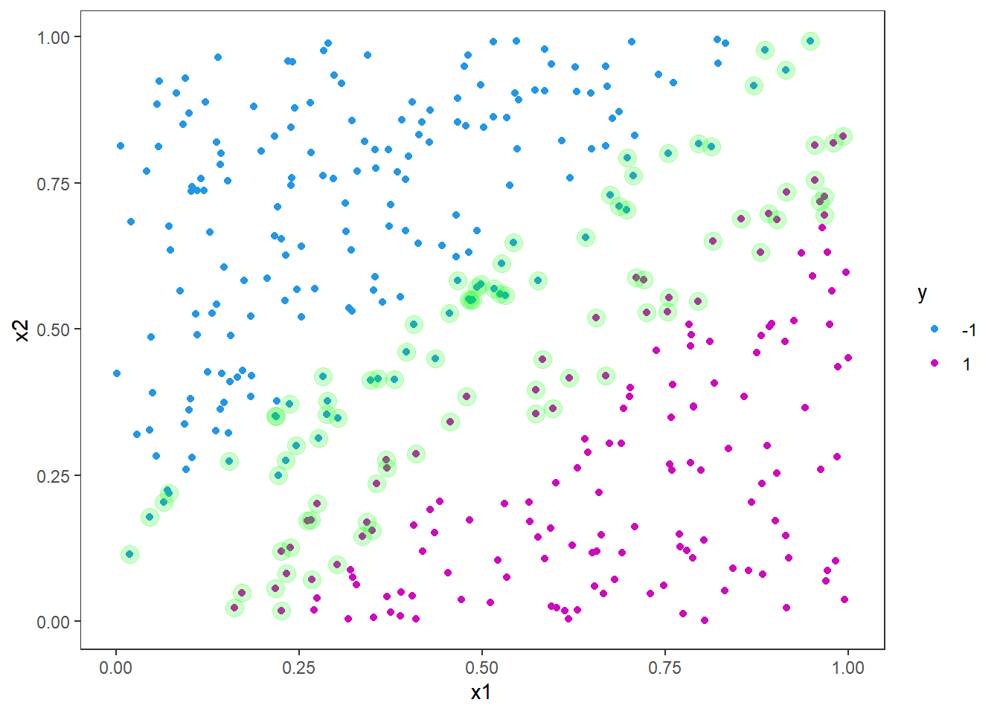
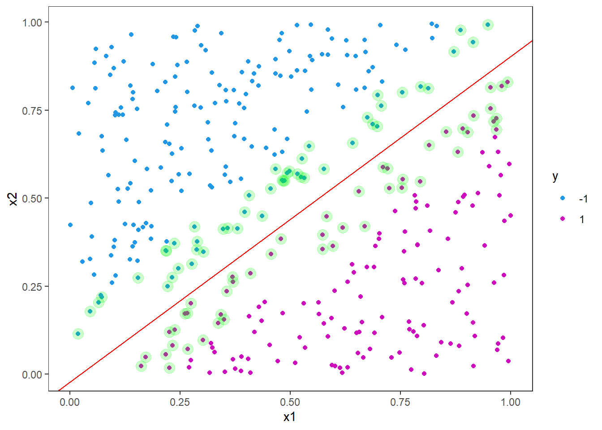
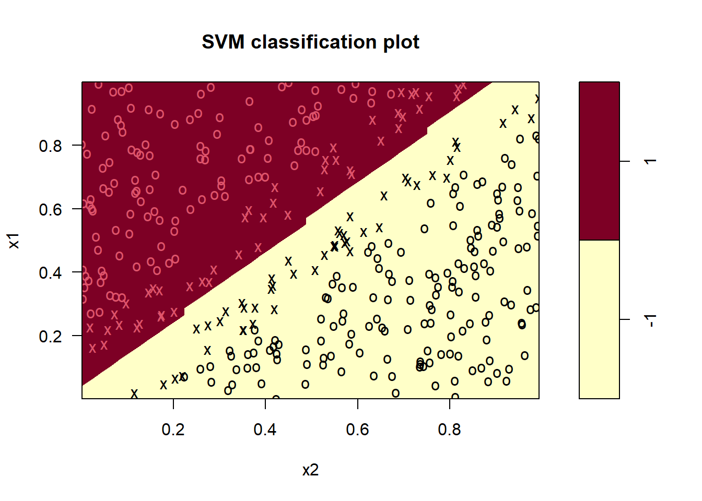
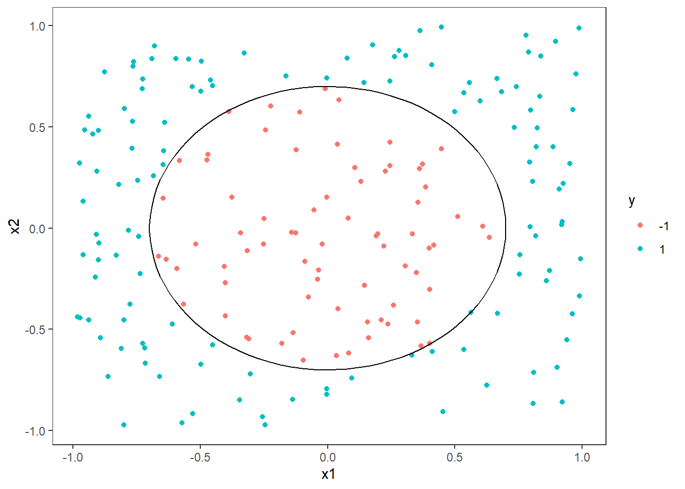
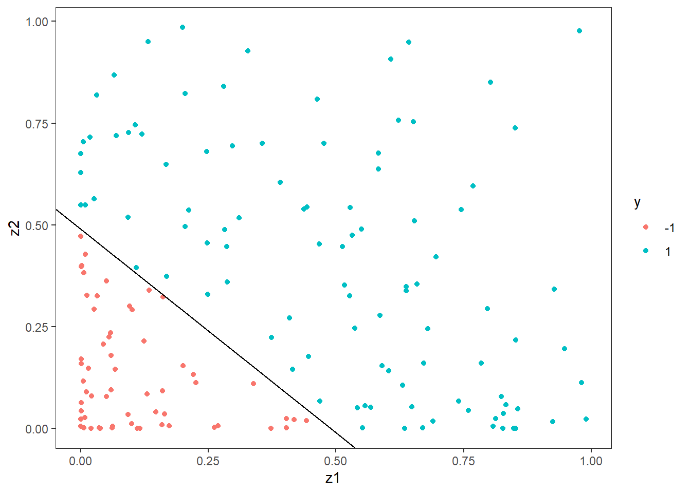

7 Support vector machines
Support vector machines is, similarly to the tree based models we have looked at already, a supervised learning method for classification. They can also be used in regression settings, but my impression is that they are mostly applied for classification in cases with continuous predictors. The reason for this is that with a support vector machine (often abbreviated svm) the outcome is a (continuous) decision boundary splitting the p-dimensional predictor space into regions where the y has different classes. We will only cover the case with two possible outcomes for y here and also only two predictors, x1 and x2. We will also only use simulated data. We will not go into the mathematical details of how the algorithm works, but focus on applications and how it may look like for a user to use svm’s. The lecture is highly inspired by the data camp course Support Vector Machines in R (see link at the buttom) and the main R package for this lecture implementing all the svm related functions is called e1071 (Meyer et al. 2021). For this lecture we have not made a video.
Say you have a data frame with two numerical explanatory variables, x1 and x2, and a response variable, y, that takes the values -1 and 1. You want to make a model for predicting the outcome of y given x1 and x2. Since y only takes two values and x1 and x2 are continuous numerical predictors, a classical decision tree would find some threshold for x1 and x2 and say that all x1 > c1 is classified as Y=-1, for instance. A support vector machine will find a continuous line that splits x1 and x2 into regions where Y=-1 and y=1. In our first example the separating line is linear and our svm will be using a linear kernel, but there are other options also (in the e1071 package: polynomial, radial basis, sigmoid).
Situations with two predictors are most interesting from a pedagogical perspective, because it is easy to visualize the separating line. In three dimensions, it will be a separating plane, while in one dimension it will only be a threshold (much like a simple decision three).
7.1 Linear SVMs
We start illustrating how it works with a simple example. The first 6 rows of the data frame looks like this:
head(df)## # A tibble: 6 × 3
## x1 x2 y
## <dbl> <dbl> <fct>
## 1 0.288 0.354 -1
## 2 0.788 0.366 1
## 3 0.409 0.287 1
## 4 0.883 0.0800 1
## 5 0.940 0.365 1
## 6 0.0456 0.178 -1Let us do a train-test split. The following code should be very familiar by now.
library(tidymodels)
split <- initial_split(df, prop = .8, strata = y)
df_train <- training(split)
df_test <- testing(split)We can plot the training data with x1 on the x axis and x2 on the y axis and color the dots by the categorical y response variable.
p <- ggplot(df_train, aes(x=x1,y=x2,col = y)) +
geom_point()+
scale_color_manual(values = c(4,6))
pHere it is clear that a linear split will fit perfectly from just looking at the figure. But let us use the e1071 package and fit an svm for this problem and see the line. The different arguments in the function call below are quite self-explanatory, but we specify the formula and the data first. Then we specify that it is classification we want to do and that the kernel should be linear. This means we want the curve that divides the data set to be a straight line. The scale argument is set to false, as we do not want to scale the predictors nor response variables here. If scale is true, the algorithm will standardize both the x and y variables.
library(e1071)
svm_fit <- svm(y ~ .,
data = df_train,
type = "C-classification",
kernel = "linear",
scale = FALSE)
summary(svm_fit)##
## Call:
## svm(formula = y ~ ., data = df_train, type = "C-classification", kernel = "linear", scale = FALSE)
##
##
## Parameters:
## SVM-Type: C-classification
## SVM-Kernel: linear
## cost: 1
##
## Number of Support Vectors: 95
##
## ( 48 47 )
##
##
## Number of Classes: 2
##
## Levels:
## -1 1There is not a lot of information here, but note especially the number of support vectors (95). We will come back to this later.
Now, let us plot the points again and highlight the support vectors from the model fit.
# Extract support vectors
df_sv <- df_train[ svm_fit$index, ]
p <- p +
geom_point(data = df_sv, color = "green", alpha = .2, size = 4)
p
As you can see, the support vectors are clustered around the decision boundary. One could say that they support the decision boundary, hence the name. In general, the support vectors are data points that are closer to the hyperplane and influence the postion and orientation of the hyperplane. The idea is to use the support vectors to find the hyperplane that maximizes the margin of the classifier. By looking at the figure you can imagine drawing many straight lines that will split the blue and purple dots, but by maximizing the margin we get closer to a unique solution.
Next we will add in the decision boundary and margins. It is not as straight forward as one might imagine to extract the intercept and slope from the fitted object. The reason for this is likely that the implementation is more general than a linear kernel in two dimensions. Still we can derive this information from the information in the fitted object.
First we must build the weight vector, \(w\), from the coefficients and the support vectors matrix.
w <- t(svm_fit$coefs) %*% svm_fit$SV
w## x1 x2
## [1,] -5.180669 5.60003The slope is then given by the negative ratio between the first and second weight
svm_slope <- -w[1]/w[2]
svm_slope## [1] 0.9251146and the intercept is found by the ratio between the rho element and the second weight
svm_intercept <- svm_fit$rho / w[2]
svm_intercept## [1] -0.02130264Let us add it to our figure
p <- p +
geom_abline(slope = svm_slope, intercept = svm_intercept, col = "red")
p
The margins are parallel to the decision boundary with an offset of 1/w[2].
p <- p +
geom_abline(slope = svm_slope, intercept = svm_intercept-1/w[2], col = "red", linetype = "dashed")+
geom_abline(slope = svm_slope, intercept = svm_intercept+1/w[2], col = "red", linetype = "dashed")
pNote that the decision boundary is supported by roughly the same number of support vectors on either side. In this example we do not have any instances violating the boundary, so our accuracy on the test set will be perfect (100%), but let us test it anyway.
svm_fit %>% predict(df_test) %>%
bind_cols(df_test) %>%
conf_mat(truth = "y", estimate = "...1") # default name of new column is "...1"## New names:
## • `` -> `...1`## Truth
## Prediction -1 1
## -1 51 0
## 1 0 40As we can see, there is no need to calculate the accuracy as all predictions are correct it will be 1.
There is also a built-in plotting function for svm’s in the e1071 package. It highlights the support vectors by x’es and observations by o’s, and separate the decision boundary by the different colored areas. It takes the fitted object and the data set you want to predict on. Here we use the training set, but you can also use the test set.
plot(svm_fit, data = df_train)
Note that here x1 is on the y-axis and x2 on the x-axis (opposite of what we did in ggplot above).
Now, we will play a little bit with the hyperparameters. Remember that we had 95 support vectors in our first attempt. Now we will increase the cost hyperparameter, i.e. the cost of constraint violations.
svm_fit <- svm(y ~ .,
data = df_train,
type = "C-classification",
kernel = "linear",
scale = FALSE,
cost = 100)
summary(svm_fit)##
## Call:
## svm(formula = y ~ ., data = df_train, type = "C-classification", kernel = "linear", cost = 100, scale = FALSE)
##
##
## Parameters:
## SVM-Type: C-classification
## SVM-Kernel: linear
## cost: 100
##
## Number of Support Vectors: 7
##
## ( 3 4 )
##
##
## Number of Classes: 2
##
## Levels:
## -1 1As you can see from the model output, the number of support vectors has drastically reduced from 95 to 7. We can also look at the equivalent plot (code as above is not included here).

Here you see that the margin is much narrower. Increasing the cost like this for linear support vector machines can be useful in situations where the decision boundary is known to be linear. We will now consider a situation where the decision boundary is non-linear - in fact a circle.
7.2 Polynomial SVM
To generate circles for plotting, we introduce the function circle. This creates a tibble data frame with npoints rows containing x1 and x2 coordinates for a circle of radius r.
circle <- function(x1_center, x2_center, r, npoints = 100){
theta = seq(0,2*pi,length.out=npoints)
tibble(
x1c = x1_center + r*cos(theta),
x2c = x2_center + r*sin(theta)
)
}We generate the data and plot it with the decision boundary being a circle of radius 0.7.
radius <- .7
set.seed(54321)
# generate data:
df <- tibble(
x1 = runif(200, min = -1, max = 1),
x2 = runif(200, min = -1, max = 1),
y = factor(ifelse(x1^2+x2^2 < radius^2, -1,1), levels = c(-1,1))
)
# train-test split
split <- initial_split(df, prop = .8, strata = "y")
df_train <- training(split)
df_test <- testing(split)
# Generate decision boundary circle:
boundary = circle(0,0,r = radius)
# Plot
p <- ggplot(df, aes(x=x1,y=x2,col=y)) +
geom_point() +
geom_path(data = boundary,
aes(x=x1c, y= x2c),
inherit.aes=FALSE)
p
Let us first try to fit a linear svm to these data. We expect it not to perform very well, but let us see how bad it will be. For a quick check we just plot the result using the plot function.
svm_fit <- svm(y ~ .,
data = df_train,
type = "C-classification",
kernel = "linear",
scale = FALSE,
cost = 1)
plot(svm_fit, data = df_train)As expected, the linear svm performs bad and predicts all observations to belong to the class \(y=1\). The number of support vectors (114) is also very high, which is a sign of poor performance. We can try to increase the cost, as we did before.
svm_fit <- svm(y ~ .,
data = df_train,
type = "C-classification",
kernel = "linear",
scale = FALSE,
cost = 100)
plot(svm_fit, data = df_train)More or less the same result. Increasing the cost reduced the number of support vectors to 119.
The solution to this problem is to use another kernel than the linear one, but before we to that, we will use the transformation trick. As is often the case, a smart transformation can often take a non-linear problem and make it linear. In this case, we know the boundary is a circle and the formula for a circle is \[ x_1^2 + x_2^2 = r^2, \] where \(r\) is the radius. If we transform the data, by squaring the observations, say \[z_1 = x_1^2 \quad\text{and}\quad z_2=x_2^2,\] we get that \[x_1^2+x_2^2 = z_1+z_2 = r^2 \quad\Rightarrow \quad z_2 = r^2-z_1.\] That is the relationship between \(z_1\) and \(z_2\) is linear with a slope of \(-1\) and an intercept of \(r^2\). Since we know the true radius, we can plot this directly:
df_train2 <- df_train %>% mutate(z1=x1^2, z2 = x2^2) %>% select(z1,z2,y)
ggplot(df_train2, aes(x=z1,y=z2,col=y)) +
geom_point() +
geom_abline(slope = -1, intercept = radius^2)
Let us fit a linear svm to the transformed data.
svm_fit <- svm(y ~ .,
data = df_train2,
type = "C-classification",
kernel = "linear",
scale = FALSE,
cost = 100)
plot(svm_fit, data = df_train2)Clearly, this is more satisfying.
The next step we will test is to use the original data without transforming, but using a different kernel. Instead of squaring the data, we will use a polynomial kernel of 2nd degree. Using the polynomial kernel option, there are three hyperparameters: degree, gamma and coef0. The polynomial kernel is parameterized as \((\text{gamma*u'*v}+ \text{coef0})\text{^degree}\), where \(u\) and \(v\) are data vectors. We set the kernel argument to “polynomial” and degree to 2, and for now we use standard options for gamma and coef0.
svm_fit <- svm(y ~ .,
data = df_train,
type = "C-classification",
kernel = "polynomial",
degree = 2,
scale = FALSE,
cost = 1)
plot(svm_fit, data = df_train)mean(df_train$y == predict(svm_fit, df_train)) #Accuracy## [1] 0.9874214The accuracy is certainly very high (98.7%), but for the sake of learning, we will try to improve this further by tuning the hyperparameters instead of using the defaults. We do this by using the tune.svm function in e1071. The syntax is very similar to the svm function, but we need to feed in the x’s and y’s separately as below and also feed in a vector for each of the hyperparaemters with the values we want to consider. We use costs of 0.1,1,10 and 100, gamma values of 0.1,1 and 10 and coef0 of 0,0.1,1 and 10. The tuning can take some time, but on this example it is quite fast.
df_train <- as.data.frame(df_train)
tuning <- tune.svm(
x = df_train[,-3],
y = df_train[,3],
type = "C-classification",
kernel = "polynomial",
degree = 2,
#Suggestions for the hyperparameters:
cost = 10^(-1 : 2),
gamma = c(0.1, 1, 10),
coef0 = c(0, 0.1,1,10)
)
# Extract the "best" parametrs:
tuning$best.parameters## degree gamma coef0 cost
## 6 2 10 0.1 0.1We fit the model using the best parameters from the tuning:
svm_fit <- svm(y ~ .,
data = df_train,
type = "C-classification",
kernel = "polynomial",
degree = 2,
scale = FALSE,
cost = tuning$best.parameters$cost,
gamma = tuning$best.parameters$gamma,
coef0 = tuning$best.parameters$coef0)
plot(svm_fit, data = df_train)mean(df_train$y == predict(svm_fit, df_train)) #Accuracy## [1] 0.9937107The tuning resulted in a slight improvement of roughly half a percent of accuracy going from 98.7% to 99.4%, but we are already very close to 100%.
On the data camp course recommended below you will learn more about this and in chapter 4 you will also go a bit further than we have here.
Data camp
We highly recommend the data camp course Support Vector Machines in R chapters 1-4.